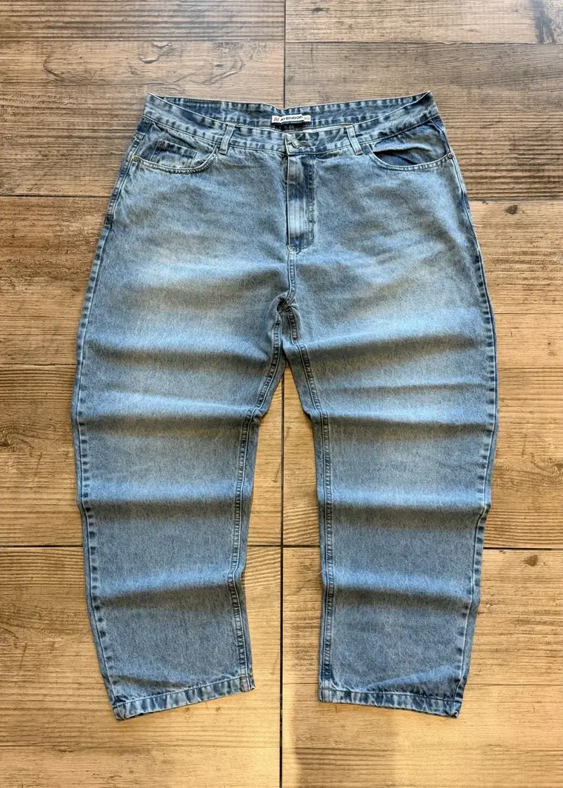
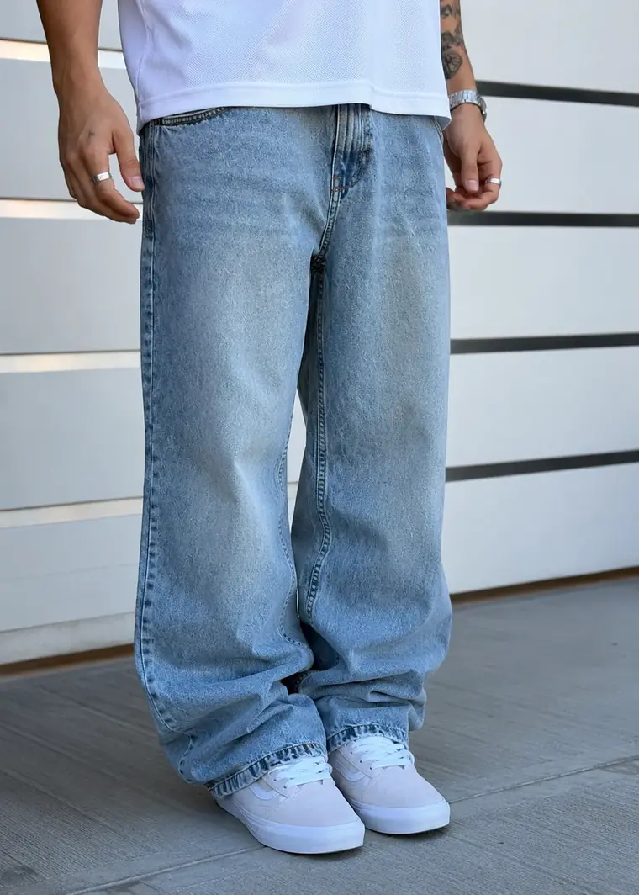
Brack
Jean mom celeste AN
Indumentaria urbana · Santa Rosa, La Pampa
Los drops salen por tanda y no se repiten. Todas las medidas publicadas talle por talle, 20% off en efectivo y envío gratis superando $200.000.
Lo que está saliendo
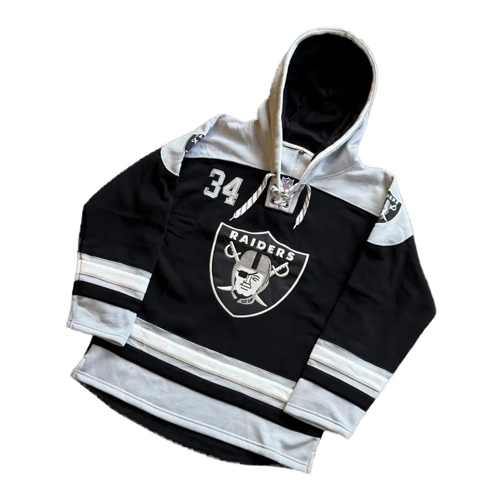
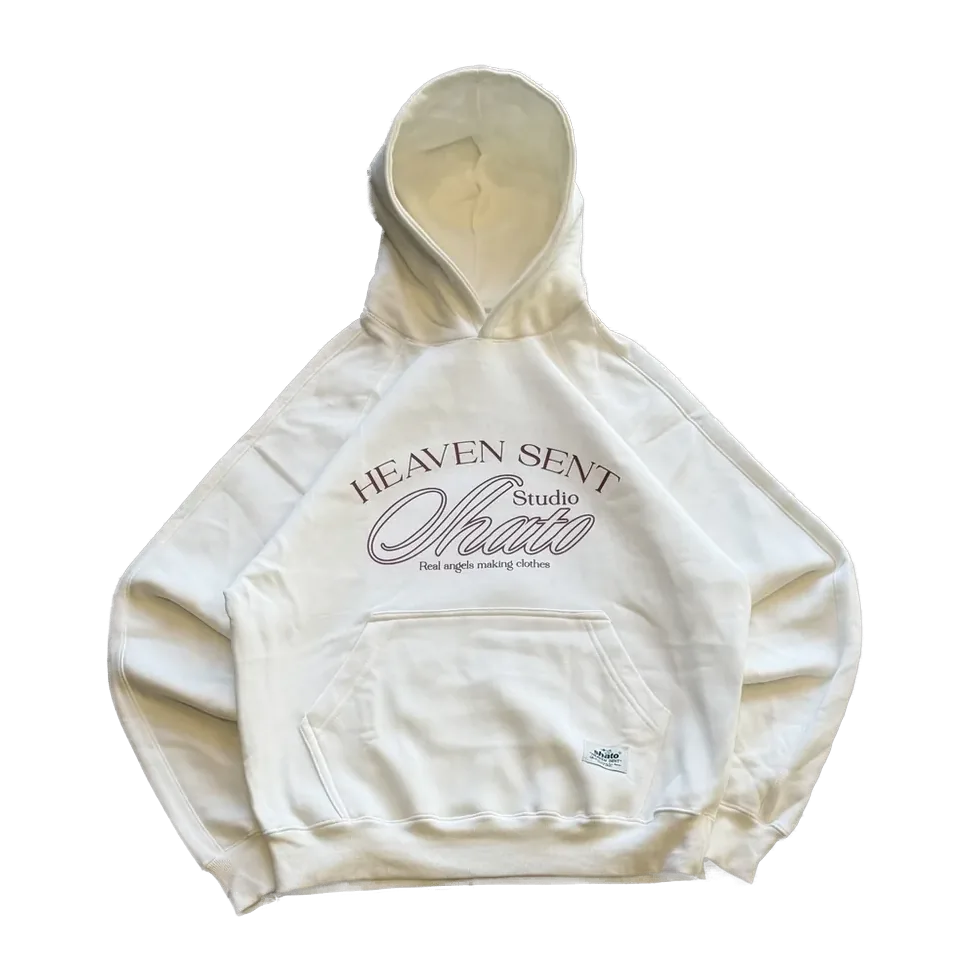
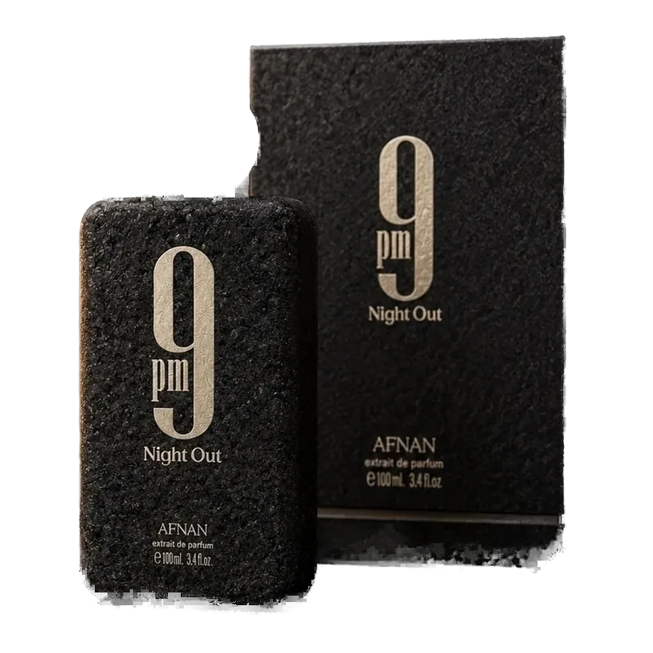
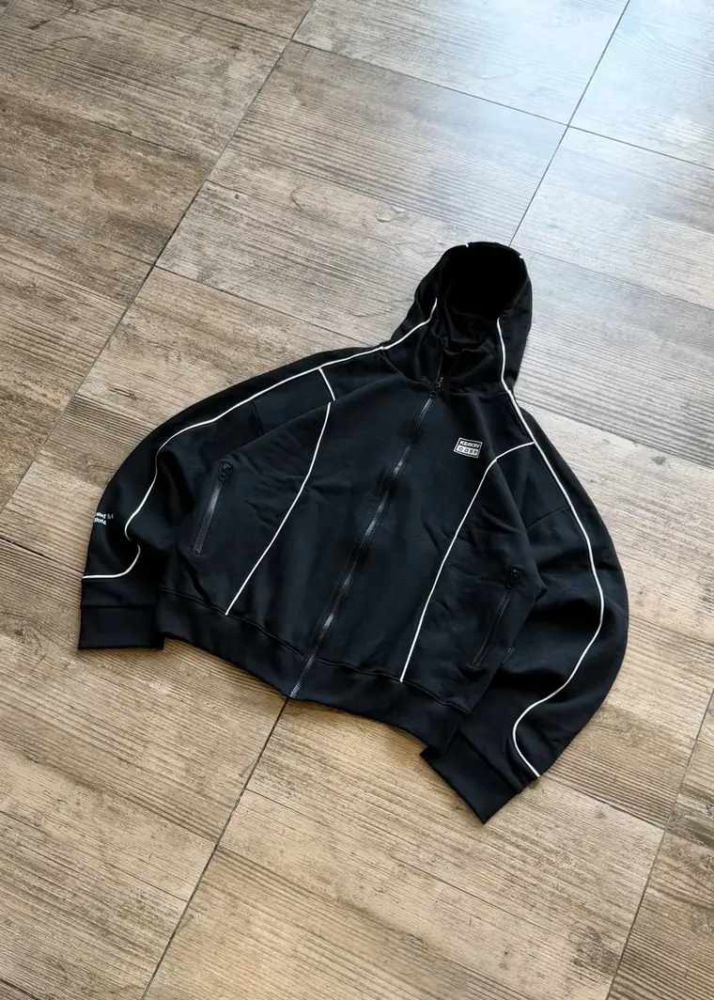
Campera OVER KBRKRV · $99.000Lo último que entró
Una selección corta, curada a mano. El resto de la colección vive más abajo — y el stock rota todos los días.
Deslizá — cada prenda abre su ficha
Perchero y puesto
Las mismas cuatro prendas, tal como están hoy: dobladas en el piso y puestas en el cuerpo. Pasá el mouse o tocá para girarlas.


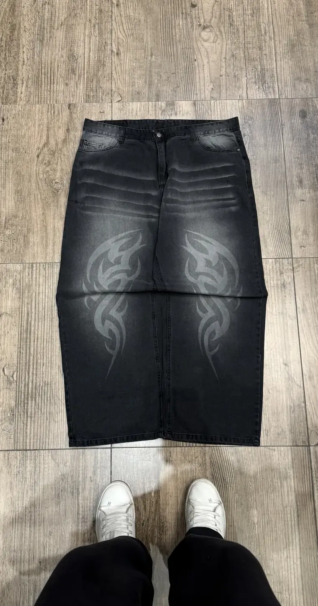
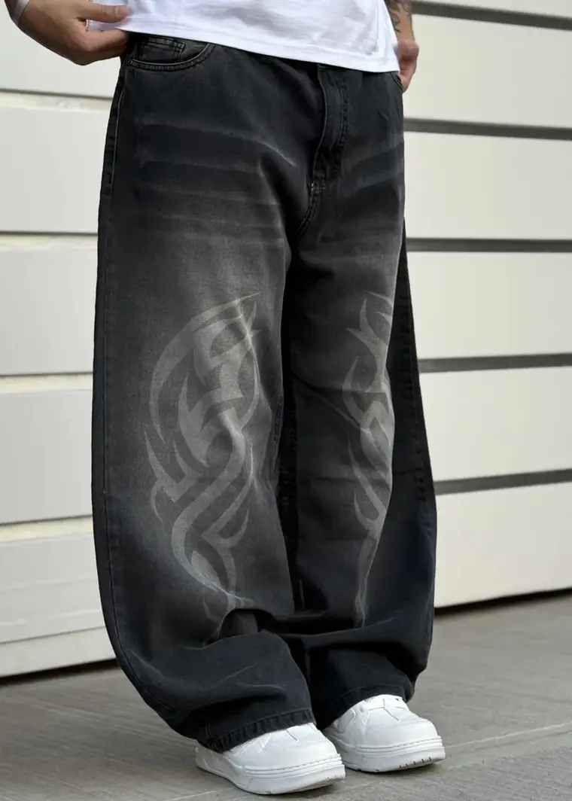
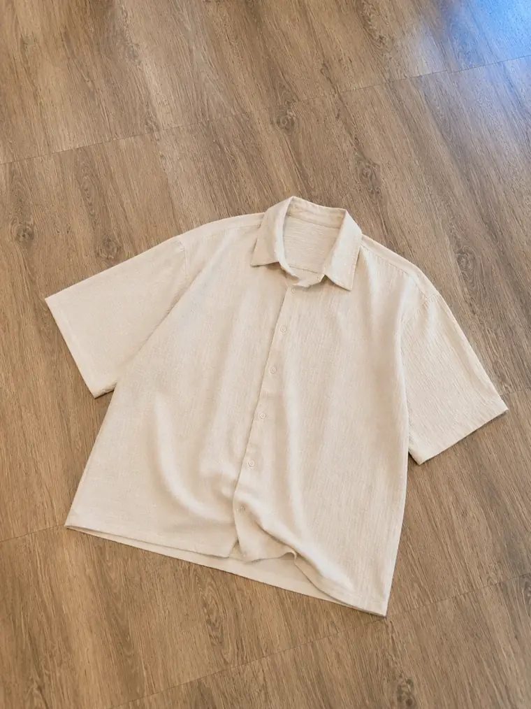
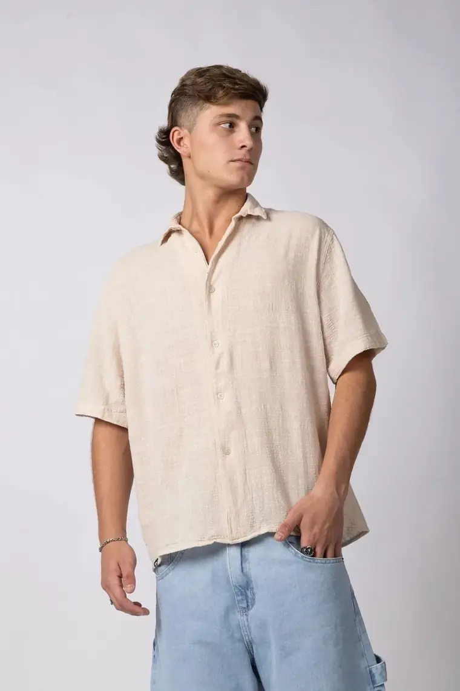
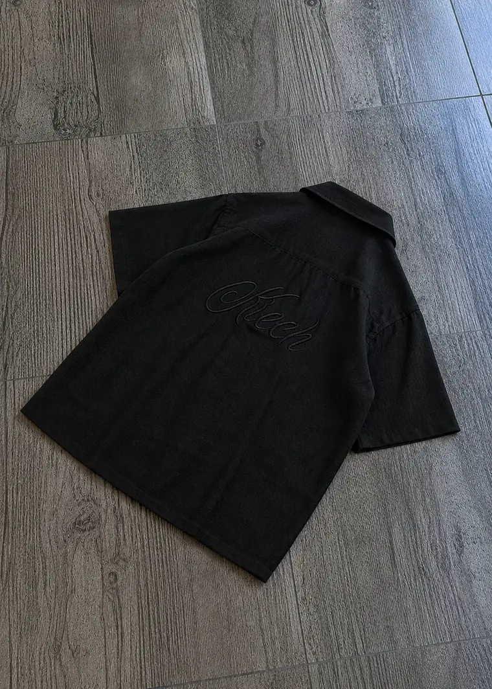
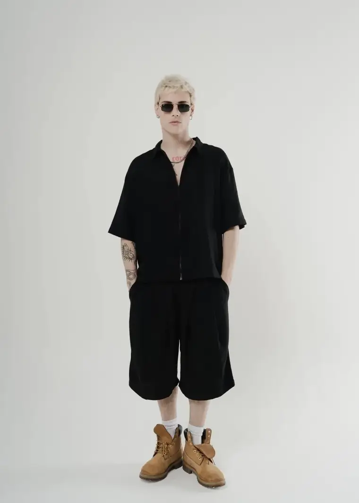
Glosario de cortes
Tres palabras que usamos en todo el catálogo. Acá están puestas, en tres pantalones que hoy podés comprar y fotografiados igual: misma pose, misma distancia. Lo que cambia de una foto a la otra es el corte.
La pierna sale ancha desde la cadera y no afina en ningún momento: el ruedo se apila sobre la zapatilla y le tapa el empeine.
Ver los baggyCae recto desde la cadera, con bastante menos tela que el baggy: el ruedo apoya sobre la zapatilla y ahí se queda, sin amontonarse.
Ver los mom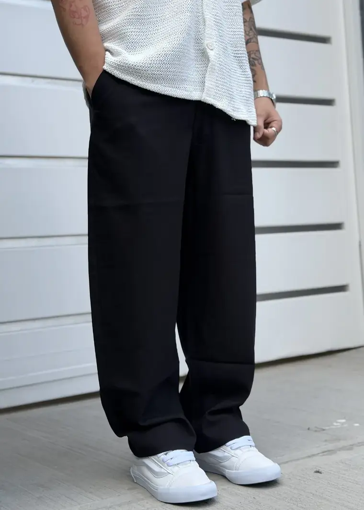
Sin volumen: la tela cae lisa y sigue la pierna, y el ruedo corta justo donde empieza la zapatilla.
Ver los de lino¿Dudás entre dos? Escribinos por WhatsApp y te decimos cuál te va.
En Instagram
Cada tanda entra primero por Instagram. Estos son los últimos reels del local — se ven acá mismo, y si tocás uno se abre en la app.
No pudimos cargar los reels acá —puede ser un bloqueador de contenido—. Están todos en nuestro Instagram.
Ver @brack.indumentariaRecién llegados
Las tandas no se repiten: lo que hoy está publicado, la semana que viene quizás ya no esté en tu talle. Esto es lo último que entró.
Colecciones
La marca
Pagando en efectivo o por transferencia, sobre el precio publicado.
Con tarjeta, sin recargo: la cuota sale del precio de lista.
A todo el país, con seguimiento. Debajo de eso, el costo del correo.
Prendas, zapatillas y perfumería disponibles hoy, con talle y medidas publicadas.
Indumentaria, zapatillas, gorras, camisetas, perfumería y más.
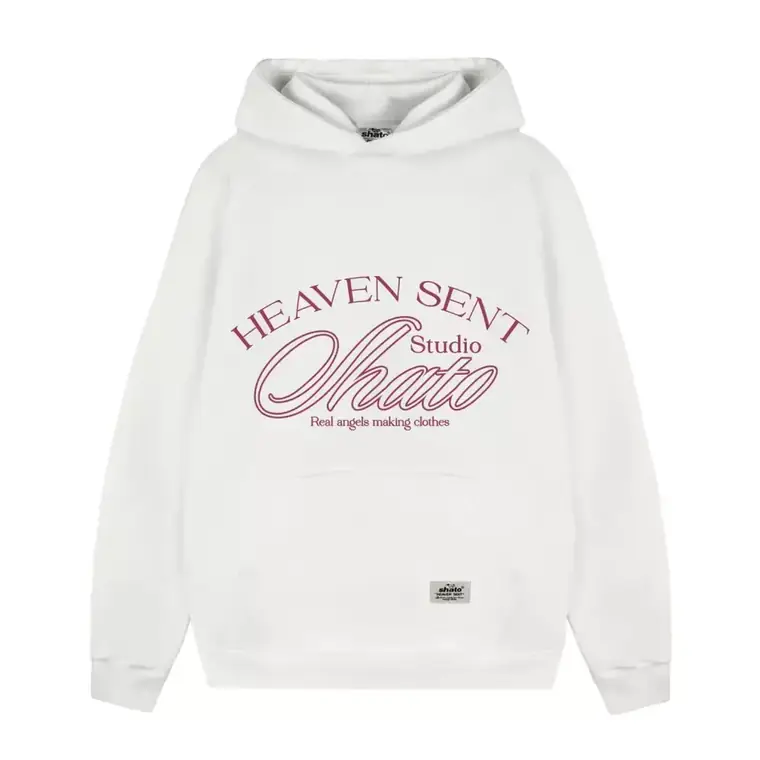
Buzo Shato Frizado · $86.500Santa Rosa, La Pampa
Todo lo que ves publicado está en el local: podés venir, probártelo y llevártelo. Y si sos del interior, te lo mandamos.
Consultar por WhatsApp20% off pagando en efectivo · 6 cuotas sin interés · envío gratis superando $200.000. Todo lo publicado está en el local: podés venir a probártelo.
El local
El local
25 de Mayo 772, Santa Rosa, La Pampa. Todo lo publicado está acá: venís, te lo probás y te lo llevás.
Pasá por el local o escribinos: te decimos qué talles quedan y coordinamos el envío.
Consultá si está tu talle Cómo llegarEnterate de los drops antes que nadie
Dejanos tu WhatsApp y te avisamos cuando entra el próximo drop y cuando vuelve tu talle. Sin spam: te escribimos solo cuando entra algo o cuando vuelve tu talle.